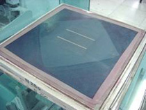
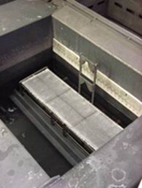
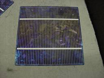
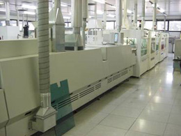
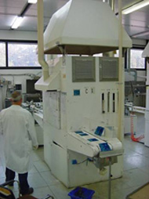
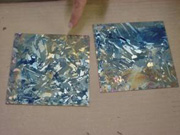
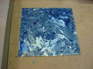

Silver is an excellent conductor and is usually
used for the front surface metallisation for most solar cells where the volume
of metal needs to be kept to a minimum to prevent shading losses. Many of the
issues associated with the screen printing of silver paste are the same as for
screen-printing aluminium paste. The design of the screens, however, is more
critical as the width of the screen printed silver lines has an important impact
on the percentage of the cell front surface that is shaded by the metal. The
metal lines are normally called fingers which then carry the current from the
peripheral regions of the cell to the busbars that run perpendicularly to the
fingers and are of much greater width and often form the base onto which the
interconnect wires are soldered as shown to the left. In large-scale commercial
production, the minimum linewidth reliably achieved for the silver fingers is
in the vicinity of 150 microns.
It is quite challenging to reliably and repeatedly
print screen-printed silver fingers with a width less than about four times
the strand diameter for the stainless steel mesh. This relationship simply
relates to the ability to force the paste through the stainless steel mesh and
the density of holes in a mesh necessary to ensure breaks do not occur in the
metal lines. These issues are the same as referred to in conjunction with the
screen-printing. The minimum linewidth for the metallization is therefore determined
by the strand diameter in the stainless steel mesh that needs to be used to
provide adequate strength for repeated use in screen printing in a production
environment. Narrower linewidths have been demonstrated either by using higher
density meshes with smaller strand diameter or else using standard stainless
steel meshes but with narrower openings in the emulsion.

The former causes
problems through repeated use of the screens that deform as the stainless steel
mesh does not have the strength to withstand repeated use in production environment.
In the latter, the printing process tends to be unreliable due to minor breaks
that occur in the metal lines due to inadequate width in the metal lines. Any
tendency for holes to be blocked will automatically cause a break in the line
with no redundant holes available due to the narrowness of the emulsion opening.
Another alternative for finer lines is the use of a stainless steel sheet in
place of the mesh. This sheet can have the screen-printing pattern etched into
it leaving narrow bridges in the etch lines for support. Provided these bridges are narrow enough, breaks in the screen-printed
lines can be avoided. These screens are expensive and rarely used in
production at present.
The issues relating to the emulsion thickness
are even more critical with the silver screen printing than for the aluminium
screen-printing. This is because the metal lines need to be made as thick as
possible to minimize resistive losses. A certain cross-sectional area is needed
for the silver fingers to provide adequate conductivity, and since these lines
need to be kept as narrow as possible, this can only be achieved provided adequate
thickness in the vicinity of 20 microns can be achieved. It should be noted
that a 20-micron thick silver line will shrink to a little under half that height
when the paste is fired at high temperature. In addition, the resistivity of
screen-printed and fired silver is approximately a factor of three worse than
normal silver. For more information on the importance of the emulsion thickness
in achieving the desired dimensions for the screen-printed silver fingers, refer
to the section relating to the screen printing of the aluminium paste.
Many manufacturers chemically clean the surface
of the silicon prior to applying the silver paste for the front metal contact.
This includes the removal of diffusion oxides and/or native oxides of the silicon
that form during previous high temperature processes. These are removed to
ensure good ohmic contact is achieved between the silver and the n-type silicon. The formation of the silver metal contact to
the phosphorus-diffused silicon is a critical step in the whole production process
and can have a major impact on the final device performance. Some manufacturers
therefore prefer to not have any variability in the surface conditions prior
to applying the silver paste. This is most easily achieved by using chemical
cleaning in hydrofluoric acid to remove oxide layers followed by rinsing, hydrochloric
immersion to remove metal contaminants, and a final rinse again in high purity
deionized water as shown above.


Some manufacturers, however, choose to deposit
the silver metal onto an antireflection coating and then fire the metal through
the antireflection coating to form an ohmic contact onto the underlying heavily
doped phosphorus silicon. It is more challenging to achieve reliable contact
formation with this latter approach as any variability in the antireflection
coating thickness or material properties will directly impact the ability of
the silver to contact the underlying n-type silicon. Nevertheless, the highest
performance screen-printed cells will tend to use this approach but need to
have very careful in-line quality control to prevent problems with yields that
can occur if this particular part of the process cannot be formed repeatedly
and reliably.
Level
2 - Silver screen-printing and firing
The
firing conditions are of considerable importance for the screen printed silver
metallization, potentially having a far greater impact on the device performance
than the firing conditions used for the rear aluminium metal contact. The primary
performance parameter of the device affected by the firing conditions is the
series resistance and hence the fill factor for the device. Variability in
the furnace temperature can lead to the fill factory varying anywhere from 25%
up to a maximum approaching 80%.
To
understand the manner in which the firing of the screen-printed silver paste
can impact the series resistance of the device, it is important to recognize
the relative dimensions and thicknesses of the layers involved in forming the
ohmic contact. The phosphorus-diffused layer is typically less than a micron
in depth, while the finest screen-printed silver lines are normally at least
120 microns in width. During firing, the silver is driven into the phosphorus-diffused
silicon therefore acting to reduce the lateral conductivity of the phosphorus-diffused
silicon directly beneath the silver/silicon alloy region. If the silver is
driven too deep, very few of the electrons collected by the junction will be
able to flow into the n-type region directly below the silver metal due to the
excessively high sheet resistivity of the n-type layer in this region. This
forces most of the current collection by the metal contact to take place at
the very edges of each metal finger where the interface area with the phosphorus
diffused silicon is typically only about 1% of the total interface area between
the screen printed silver and the silicon.

This becomes
a severe problem as the silver has a relatively high work function, making it
difficult to achieve a good ohmic contact between silver and n-type silicon.
This is partially overcome by making the phosphorus doping of the silicon extremely
high, therefore preventing the formation of Schottky barriers between the silver
and the n-type silicon and enabling an ohmic contact to be formed. Unfortunately,
however, the heaviest doped region of the phosphorus-diffused emitter is near
the surface. Consequently, if the screen printed silver is driven too deeply
into the silicon, not only does it close off the phosphorus diffused silicon
channel beneath the silver as described above, but it also leads to the majority
of the interface between the silver and the n-type silicon being in regions
where the phosphorus doping is substantially lower and therefore vulnerable
to Schottky barriers and higher contact resistances per unit area.
There
are therefore two effects that are able to significantly increase the effective
contact resistance for the screen-printed silver metallization. One is a geometrical
effect that relates to the closing off of the phosphorus diffused emitter to
laterally flowing electrons that increases the contact resistance by forcing
most of the current collection to take place at the very edges of the metallization
with corresponding current crowding effects that contribute to the resistive
losses. The second contribution is an electronic one where the actual contact
resistance per unit area increases with reduced phosphorus doping levels in
the silicon. This electronic effect is contributed to by the high work function
of the silver that naturally tries to form Schottky barriers with n-type silicon.
These detrimental effects will also be enhanced by driving the silver paste
deeper into the emitter but also by the parameters and techniques chosen for
carrying out the phosphorus diffusion of the emitter which will in turn determine
the phosphorus doping profile and hence the phosphorus concentration in the
silicon at the interface point between the silver and the silicon.
The
above will suggest that it is preferable to have the silver penetrate as little
as possible into the phosphorus diffused silicon. To an extent this is correct,
although adequate temperatures are necessary to convert the silver paste into
silver metal while simultaneously alloying it adequately with the phosphorus
diffused silicon to both provide mechanical robustness but also to help destroy
the Schottky barriers that will otherwise exist between the silver and phosphorus
diffused region.
Another
effect that production line operators should be aware of is that which relates
to the screen-printed silver metal being driven into the junction region and
beyond. This phenomenon will be particularly important if the phosphorus diffusion
of the silicon during the emitter formation is not uniform such that the junction
depth varies spatially across the wafer. Most silver pastes are protected from
shunting through to the p-type substrate by the high work function of the silver
that will tend to prevent it from forming an ohmic contact. Shunting effects
are therefore rarely observed when the silver is driven through the front junction,
although contaminants such as aluminium are sometimes present in sufficient
quantities in faulty batches of silver paste to cause such shunting to occur.
However, even if shunting does not result when the silver penetrates through
the junction, the device ideality factor will rise significantly due to increased
junction recombination that results from the presence of metal ions or other
contaminants or defects within the critical regions of the depletion region
of the junction.
It
is important to recognize that whenever any change takes place with the way
the phosphorus diffused emitter is formed, the firing conditions for the silver
metallization should be re-optimized. In general, however, the phosphorus concentration
needs to be in the vicinity of the solid solubility for phosphorus in silicon
in the region of the interface between the silver and the silicon to keep the
contact resistance at acceptable levels. This unfortunately necessitates a
dead region near the surface of the solar cell since this level of doping near
the solid solubility needs to be maintained to a reasonable depth to coincide
with the depth that the silver needs to be driven to in the alloying process.
A
superior approach implemented by some manufacturers is to use a dielectric layer
on the surface of the silicon to act as an extension to the silicon during the
process of firing the silver metallization. For example, if the silver alloying
needs to be driven to a depth of 0.2 microns to achieve adequate robustness
for the metal contact and adequate conductivity for the fired silver, then in
principle this depth can be reduced significantly if a dielectric layer such
as the antireflection coating can be deposited onto the silicon surface in a
manner by which it acts as an extension to the silicon. This approach has been
optimised in production and enables the silver/silicon interface to occur closer
to the silicon surface, therefore facilitating both shallower junctions and
also the location of the interface in the proximity of more highly doped silicon
that therefore aids ohmic contact formation. With this approach, sheet resistivities
for the emitter in the range of 50-70 ohms/square can potentially be used while
still facilitating adequately low contact resistances. This compares to the
more normal 40 ohms/square typically used with most screen-printed cells. The
higher sheet resistivity of 50-70 ohms/square makes it feasible to eliminate
most of the dead region at the surface with corresponding improved response
to short wavelengths of light. This improved response necessitates improved
surface passivation relative to conventional screen-printed solar cells. Otherwise
a similar poor response to short wavelength light will result as may also a
reduction in the open circuit voltage due to the increased contribution to the
dark saturation current resulting from the surface recombination.


With this advanced approach of using a dielectric
layer to coat the silicon surface prior to application of the silver metallization,
particular care needs to be exercised to ensure the dielectric layer is always
of the same thickness and chemical composition, otherwise poor reliability will
result in terms of the depth to which the silver penetrates within the phosphorus
diffused region. This can potentially lead to poor yields if in fact there is
some variability in the deposition conditions for the dielectric layer (antireflection
coating). The top picture to the left is an example of poor thickness uniformity.

The dielectric
layer most commonly used for this purpose is titanium dioxide which simultaneously
acts as a good antireflection coating if applied with the correct thickness.
Titanium dioxide is often deposited as a spray process, although to use the
layer in the way described for enhancing the screen printed contact formation,
spraying does not provide adequate uniformity of thickness across the wafer
surface. Consequently, atmospheric chemical vapour deposition as shown
above is normally the preferred process for this purpose.